نتيجة الاختبار العملي — فريق الصيانة ومسارا IT
الاستكمال في 17 أكتوبر 2026، بعد خطوات الإنشاء والفرز والطلب والتسعير والمحاسبة المنفّذة في 15 أكتوبر. البيئة: copycmms فقط. العمليات تجريبية، ولا تمثل شراءً أو توريدًا أو دفعًا أو إصلاحًا ميدانيًا حقيقيًا.
النتيجة: اكتملت أيضًا دورة IT في المسارين A وB وإغلاق الرئيسي وتأكيد الفرعين، ونجح اختبار اللوت بسعر مختلف عن المتوسط. اكتملت دورة فريق التكييف من البلاغ إلى الشراء والاستلام والتحويل والصرف والاستخدام والمرتجع واعتماد المدير وإغلاق الرئيسي والفرعي وتأكيد مقدم البلاغ. تقرير الإدارة وصافي تكلفة المواد طابقا سجلات الحركة في هذا السيناريو. لم تُعدّل شيفرة البرنامج أو بنية القاعدة؛ الإدخالات تمت من الواجهة، والتحقق المباشر من القاعدة كان بالقراءة فقط.
المصروف حسب اللوت
30 ريالًا
المرتجع حسب اللوت
10 ريالات
صافي تكلفة البلاغ
20 ريالًا
المستندات المرتبطة
| المستند | الرقم | النتيجة |
|---|
| البلاغ الرئيسي | MT-2026-00588 | مغلق؛ يجمع صافي فرعه 20 ريالًا دون مضاعفة. |
| تذكرة الفريق | MT-2026-00588-01 | أُغلقت في المسار B ثم أصبحت مؤكدة من مقدم البلاغ؛ بندها يحمل الحالة نفسها. |
| طلب الشراء | PR-2026-180471 | 5 قطع: 3 للفني + 2 إضافية للمخزون. |
| فاتورة الاختبار / سند الاستلام | UAT-20261017-588 / RCV-2026-510104 | استلام فعلي لكرتون واحد بمعامل 5؛ أُضيفت 5 قطع. |
| اللوت | LOT-2026-00777 | تكلفة الكرتون 50 قبل الضريبة؛ تكلفة قطعة الصرف 10. |
| التحويل | TRB-2026-120001 / TRF-2026-120001 | تحويل 3 قطع من الرئيسي إلى مخزن التكييف، على اللوت نفسه. |
| الصرف | DLV-2026-450001 | 3 قطع إلى سهيل فدا، مرتبطة بالتذكرة والموقع والقسم. |
| المرتجع | RTN-2026-180008 | قطعة واحدة إلى مخزن الفريق، مرتبطة بسند الصرف واللوت الأصلي. |
ما اجتاز الاختبار
| الخطوة والحساب | الدليل العملي |
|---|
| اعتماد الإدارة — RED8 | اعتماد دفعة التسعير 360001؛ انتقل الطلب إلى مرحلة الشراء. |
| تسجيل الشراء — RED3 | رفع صور الاختبار وتأكيد الشراء للصنف المسند إليه. |
| التوريد ثم إدخال المخزون — RED | تأكيد وصول 5 قطع أولًا، ثم إنشاء سند استلام مستقل. تأكيد التوريد وحده لم يزد الرصيد. |
| تحويل وحدات الاستلام — RED | المعامل بدأ صفرًا، ورُفض الحفظ برسالة واضحة. بعد إدخال 5 ظهرت معاينة 5 قطع بتكلفة 10 للقطعة. بقي أصل الطلب 5 قطع دون تعديل. |
| ضريبة الفاتورة | قبل الضريبة 50، والضريبة 7.50، والإجمالي 57.50. تكلفة اللوت والحركة المخزنية 50 قبل الضريبة. |
| التحويل للمخزن الفرعي — RED | تحويل كامل احتياج الفني 3 قطع إلى مخزن التكييف؛ بقيت قطعتان في الرئيسي. لم ينشأ قيد تكلفة تنفيذ بمجرد الشراء أو التحويل. |
| الصرف الفعلي — RED | سند صرف على اللوت الأصلي، كمية 3 وقيمة 30؛ مصدر التنفيذ المحفوظ ticket_team، والتذكرة 2040004 والبند 240004. |
| الاستخدام والزيارة — SUHAIL | استكمال زيارة، تسجيل إصلاح ووصف إلزامي، تحديد المستخدم 2 والمرتجع 1، ثم إنهاء الزيارة. إنهاء الزيارة لم يغلق البلاغ. |
| قبول المرتجع — RED | ظهرت قطعة في تبويب المرتجعات. بعد القبول عادت للمخزن نفسه بقيمة 10، واختفت من قائمة المرتجع المعلق. |
| المراجعة والإغلاق — RED2 | اعتماد النتيجة جعل البلاغ جاهزًا للإغلاق ومساره B؛ ثم أُغلق رأسه وبنده، ثم الرئيسي بعد اكتمال فرعه. |
| تأكيد مقدم البلاغ — RED7 | تسجيل تأكيد الاختبار؛ أصبحت حالة الفرع والبند requester_confirmed. |
| عزل الفرق — ROBIL | تذكرة التكييف غائبة عن قوائم فني الدهان. فتح رابطها المباشر أعاده إلى مهامي اليوم. هذا تحقق واجهة، وليس اختبارًا شاملًا لتجاوز API. |
| تقرير الإدارة — RED8 | مصروف 30، مرتجع 10، صافي 20. التجميع حسب الموقع والقسم ورقم البلاغ طابق القيم. ظهرت حركتا DLV وRTN دون إضافة قيمة طلب الشراء مرة ثانية. |
| تجميع الرئيسي | الرئيسي يعرض 20، والفرعي 20 بصفته المصدر؛ التقرير العام يحسب حركة الصرف مرة واحدة ويعرض صافي 20. |
| فلتر الفترة — RED8 | اختيار 15 أكتوبر فقط أعطى صفر حركة، واختيار 17 أكتوبر أعاد حركتي الصرف والمرتجع وصافي 20. المصدر تاريخ الحركة، لا تاريخ إنشاء البلاغ. تم التحقق من قيمة الحقول الفعلية بصريًا ومن DOM. |
رصيد نهاية سيناريو الفريق — قبل اختبار IT
| الموضع | الكمية | القيمة قبل الضريبة |
|---|
| المخزن الرئيسي | 2 قطعة | 20 ريالًا |
| مخزن التكييف بعد المرتجع | 1 قطعة | 10 ريالات |
| صافي المستهلك على البلاغ | 2 قطعة | 20 ريالًا |
| الإجمالي | 5 قطع | 50 ريالًا |
|---|
القطعتان الإضافيتان للمخزون لم تُحمّلا على البلاغ؛ التحميل نتج عن الصرف الفعلي، وخُصم المرتجع المقبول.
الملاحظات المرصودة — لم تُصلح ضمن الاختبار
| المرجع | الملاحظة والأثر | حدود الإثبات |
|---|
| UAT-01 — مؤكد ومتكرر | مؤقّت الزيارة يبدأ قريبًا من 03:00:06 بعد بدء التنفيذ بثوانٍ، بدل الصفر؛ يعرض مدة مضللة أثناء الزيارة. | تكرر يومي 15 و17 أكتوبر. أوقات سجل الإجراءات محفوظة، ولا يثبت ذلك وحده أن جميع تقارير مدة العمل خاطئة. السبب المرجح تفسير توقيت UTC كتوقيت محلي؛ يحتاج مراجعة منفصلة. |
| UAT-07 — مؤكد | تفاصيل التذكرة تعرض النص materialsUsed تحت المواد المستخدمة، بدل أسماء المواد والكميات. | السجل نفسه محفوظ صحيحًا: اسم الفرشاة، الوحدة قطعة، المستخدم 2، المطلوب 3. تقرير التكلفة وواجهة الفريق عرضا الكميات الصحيحة. |
| UAT-06 — تجربة استخدام | زر «فتح صفحة الاستلام» في طلب الشراء يفتح شاشة بلا أصناف قبل تأكيد التوريد للمستودع؛ المستخدم يحتاج الرجوع لدورة الشراء وإكمال التوريد أولًا. | الحارس منع الإدخال المبكر بصورة صحيحة. المشكلة في الاختصار وتوضيح الخطوة التالية؛ لم يحدث إدخال مخزون خاطئ. |
| UAT-08 — أداء ملحوظ | بعض الشاشات والإجراءات بقيت في التحميل فترة ملحوظة، خصوصًا الصرف وقائمة مراجعة الفريق وتغيير تجميع التقرير. | اكتملت الإجراءات في النهاية دون إعادة إرسال الصرف. لم يُجر قياس أداء معزول عن أداة المتصفح؛ يلزم قياس زمن API والاستعلامات قبل تحديد السبب. |
| UAT-02 — قائم | تظهر حاجتان لبلاغين قديمين منتهيين في «تحتاج معالجة»: MT-2026-00574-01 وMT-2026-00567-01، مع رسالة تمنع متابعة التنفيذ. | الرسالة تحمي التنفيذ، لكن العدادات وقائمة العمل تضم سجلات لا يمكن معالجتها. لم تُعدّل تلك البلاغات. |
| UAT-04 — قائم | تصنيف الرئيسي «المكيفات»، والفرعي يظهر «عام». | تأكد سابقًا أن تصنيف المركز لم ينتقل للفرعي. الموقع والقسم انتقلا صحيحًا. لم يؤثر ذلك في تكلفة هذا الاختبار. |
الملاحظة السابقة UAT-03 عن غياب طبقة التكلفة أصبحت متجاوزة بعد النشر والتفعيل؛ ظهرت الطبقة وعملت في السيناريو الحالي. تكررت UAT-05 في طلب IT: ظهر اعتماد الدفعة وانتقالها للإدارة، بينما بقي رأس الطلب مؤقتًا بانتظار الحسابات وعدد الأصناف صفرًا. بعد إعادة الدخول ظهر الطلب صحيحًا؛ لا فقدان للصنف في السجل.
حدود النتيجة والمتبقي
هذه نتيجة سيناريو فريق التكييف عبر الشراء والمسار B، وسيناريو IT بفرعين A وB. لا تعني اكتمال فحص كل مسارات البرنامج أو كل حراس API.
- المتبقي على مستوى فرق الصيانة: سليم، إصلاح بلا مواد، عائق وإعادة للفريق، صيانة خارجية ودور البوابة. كما بقي مسار الإنشاءات والإسناد لفني صيانة بالاسم؛ مسار IT بالاسم اجتاز A وB.
- اكتمل اختبار مدير IT المباشر. فرع عضو IT الذي يرفع احتياجًا للمدير لم يُختبر لعدم توفر حساب it_member ضمن حسابات الاختبار.
- لم تُختبر دورة تكلفة PMV2 الجديدة عمليًا هنا، ولا شراء مخزون مستقل ثم صرفه لبلاغ آخر.
- لم يُحدد أصل في هذا البلاغ؛ اختُبر الربط بالموقع والقسم، وبقي الأصل فارغًا بصورة صحيحة.
- استخدم سيناريو الفريق لوتًا بتكلفة تساوي المتوسط؛ اختبر IT لوتًا ثانيًا بسعر مختلف عن المتوسط ومرتجعًا جزئيًا. تعدد اللوتات داخل صرف واحد وتكرار المرتجعات الجزئية ما زالا غير مختبرين.
- السجلات السابقة للتفعيل خارج هذه الجولة. لا معالجة رجعية أو تخمين تكلفة أو تنظيف بيانات قديمة.
- الاختبار لم يتضمن تسوية العهدة المالية بعد اختلاف الضريبة، أو دفعًا أو شراءً حقيقيًا.
اختبار IT — اكتمل A وB والإغلاق والتأكيد
أنشأ حساب التشغيل RED7 بلاغ الاختبار MT-2026-00589 (المعرّف 2040005) بتصنيف تقنية المعلومات. وُجّه تلقائيًا إلى مدير IT. بعد تعثر الدخول أولًا، نجح الدخول بحساب RADD بعد تأكيد المستخدم وإعادة المحاولة من شاشة جديدة؛ لم تُغيّر بيانات الحساب. التحقق بالقراءة فقط أكد وجوده ونشاطه ودور it_manager ومطابقة كلمة المرور المقدمة، دون حفظ كلمة المرور أو بصمتها في التقرير.
استلم مدير IT البلاغ، وأنشأ المهمة 180003 التي أُسندت تلقائيًا إليه، ثم حوّلها إلى الفرع MT-2026-00589-01 (2040006). سُجّل الفحص واعتمد المسار A، ثم بُدئ الإصلاح ووُثّق بملاحظة إلزامية دون مواد أو صورة لاحقة اختيارية. أُغلق الرأس والبند في 17 أكتوبر؛ لا طلب شراء ولا حركات تكلفة لهذا الفرع، وصافي المواد صفر. أُنشئت المهمة الثانية 180004 وحُولت إلى MT-2026-00589-02 (2040007) في المسار B. أُنشئ لها طلب الشراء PR-2026-180472 بقطعتين × 20 ريالًا، مع انتقال الموقع والقسم، واعتماد المراجعة والتسعير والحسابات. اكتمل الاعتماد الإداري والشراء والاستلام والصرف والمرتجع، وأغلق مدير IT فرع B بعد توثيق الإصلاح. أُغلق الرئيسي في 17 أكتوبر 2026 الساعة 11:28:40 بتوقيت الرياض. أصبحت المهمتان والجهة مكتملة، ثم أكد مقدم البلاغ الفرعين، فتطابقت حالة رأسيهما وبنديهما على requester_confirmed.
نجح اختبار اختلاف اللوت عن المتوسط: اعتُمد الطلب واشترى المندوب قطعتين تجريبيًا بسعر 20 للقطعة، واستلمهما المستودع بمعامل 1 في LOT-2026-00778. كان الرصيد السابق قطعتين × 10؛ أصبح الرصيد 4 بمتوسط 15. صُرفت قطعتان من اللوت الجديد بسند DLV-2026-450002 وربط ticket_named بالبند 240007 والفرع 2040007. تكلفة اللوت 40، والحركة بالمتوسط 30. أُعيدت قطعة بسند RTN-2026-210002 إلى اللوت الأصلي؛ خصم اللوت 20، وعكس الحركة 15. تعرض صفحة البلاغ صافي 20 حسب اللوت و15 بالمتوسط والفرق 5 ريالات، دون تكرار قيمة الشراء.
دليل تكلفة اللوت والفرق عن المتوسط
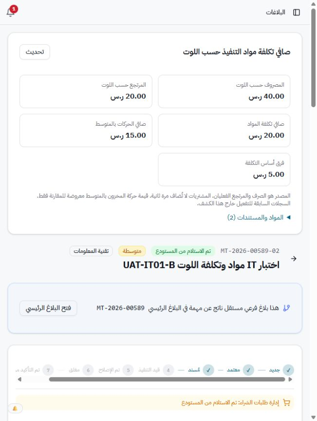
الاستلام · الصرف والربط · المرتجع الأصلي
ملاحظة عرض إضافية: قبل استلام IT، ظهر تنبيه يقول إن البلاغ حُوّل إلى «الإنشاءات» وللعرض فقط، بينما الجهة الفعلية IT وزر الاستلام متاح. اختفى التنبيه بعد الاستلام ولم يمنع دورة المسار A. لم يُنفّذ إصلاح.
UAT-09 — ملاحظة مؤكدة عند إنشاء بلاغ IT: اكتمل رفع الصورة، وظهر البلاغ بنجاح وصورته الأساسية محفوظة، لكن واجهة الإنشاء فشلت في تسجيلها ضمن جدول المرفقات بعد إنشاء البلاغ. رسالة API: «البلاغ المرتبط متاح للعرض فقط». عدد المرفقات المسجلة صفر رغم وجود الصورة الأساسية.
المسار في الكود يضيف المرفقات بعد إنشاء البلاغ، وحارس كتابة مرفقات البلاغ اعتبر مقدم بلاغ IT للعرض فقط بعد توجيهه. الواجهة تلتقط الخطأ في سجل المتصفح ثم تكمل الانتقال ورسالة النجاح، فلا تُظهر للمستخدم فشل تسجيل المرفق. لم يُختبر أثر ذلك على ملفات أخرى أو يُعمّم خارج الحالة المرصودة، ولم يُنفّذ إصلاح.
UAT-11 — تقدم الرئيسي قبل ترقية المهام: بعد إغلاق فرع A وإضافة مهمة B جديدة غير محولة بعد، بقي الرئيسي يعرض 100% وزر إغلاق رغم المهمة الجديدة. لم يُضغط الإغلاق المبكر؛ حارس الخادم يرفض وجود مهام غير محولة، لذا الملاحظة تخص دقة العرض. دليل الواجهة.
UAT-12 — انتقال مسودة الفحص بين الفروع: عند فتح الفرع B بعد A، ظهرت ملاحظات A داخل نموذج فحص B قبل وجود فحص محفوظ له. تأكدت القيم من عناصر DOM الفعلية، واستُبدلت بملاحظات B الصحيحة قبل الحفظ؛ لم يُسجل محتوى الفرع الخطأ. دليل النموذج.
بلاغ IT الموجّه تلقائيًا
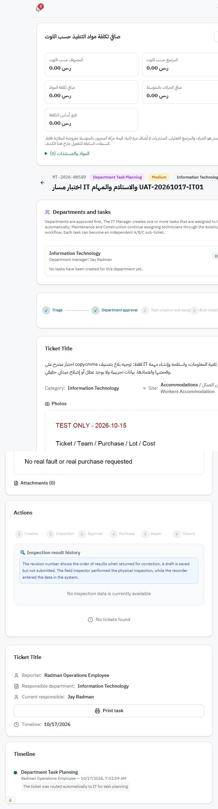
بيانات التوجيه · التحقق من الصورة والمرفقات
إغلاق فرع IT في المسار A
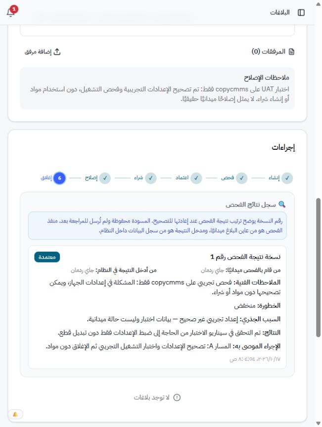
التحقق من تطابق الرأس والبند والتكلفة الصفرية
النتيجة المجمعة بعد IT
تقرير الإدارة يعرض أربع حركات فقط: صرفان ومرتجعان. المصروف باللوت 70 ريالًا، المرتجع 30، الصافي 40؛ صافي الحركات بالمتوسط 35 والفرق 5 ريالات. صافي فريق التكييف 20، وصافي IT مقدار 20، دون مضاعفة الرئيسي والفرعي أو إضافة المشتريات.
| الرصيد النهائي لصنف الاختبار | الكمية | قيمة اللوتات المتبقية | قيمة المخزون بالمتوسط |
|---|
| الرئيسي: قطعتان من 777 + قطعة مرتجعة من 778 | 3 | 40 | 45 |
| مخزن التكييف: قطعة مرتجعة من 777 | 1 | 10 | 10 |
فرق تقييم الرصيد متوقع هنا: المشروع يحتفظ بتقييم المخزون بالمتوسط ويعرض تكلفة التنفيذ حسب اللوت في سجل مستقل. لم يتغير أساس تقييم المخزون ولم تُعدّل اللوتات القديمة.
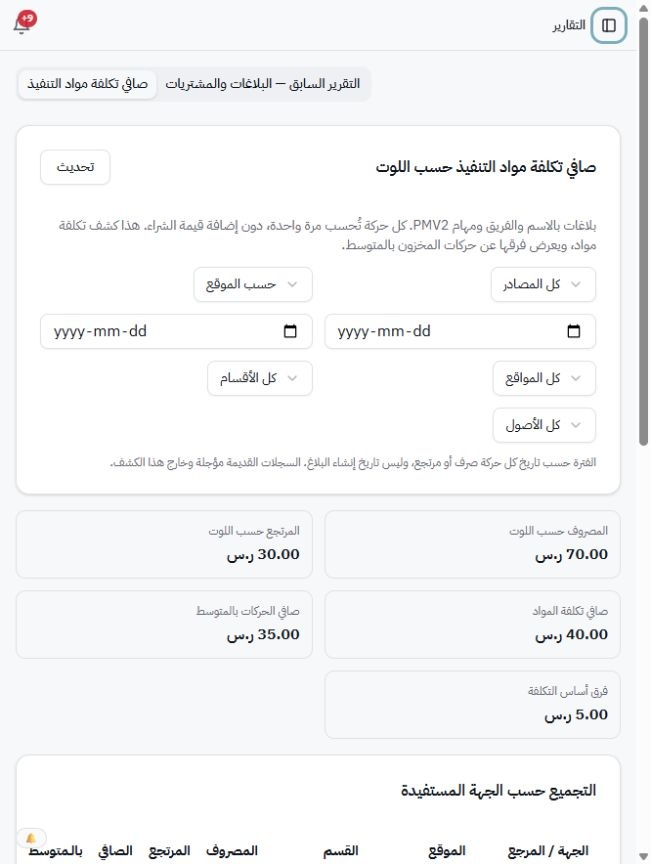
إغلاق الرئيسي وتجميد خطته
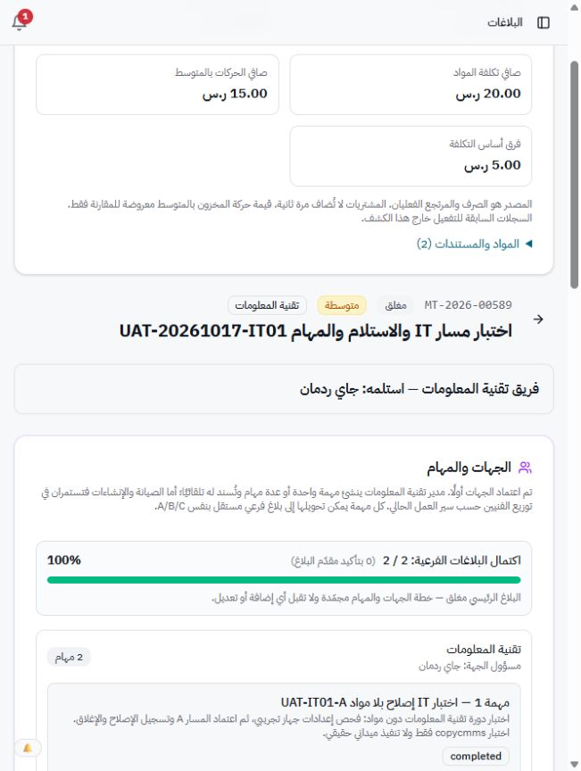
تجميع تكلفة الفريق وIT حسب البلاغ · التحقق النهائي من IT · تأكيد الفرعين · نص تقرير الإدارة
دليل نتيجة الفريق من المتصفح
تقرير الإدارة بعد الصرف والمرتجع:
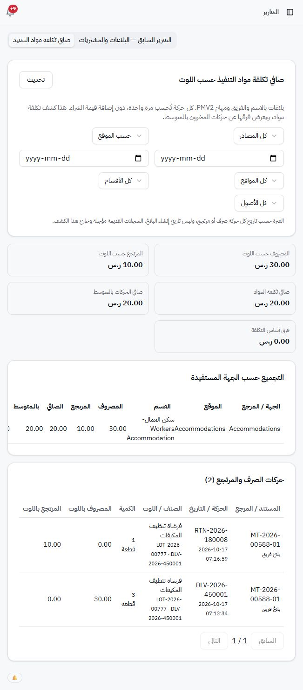
فلتر الفترة السابقة للحركات
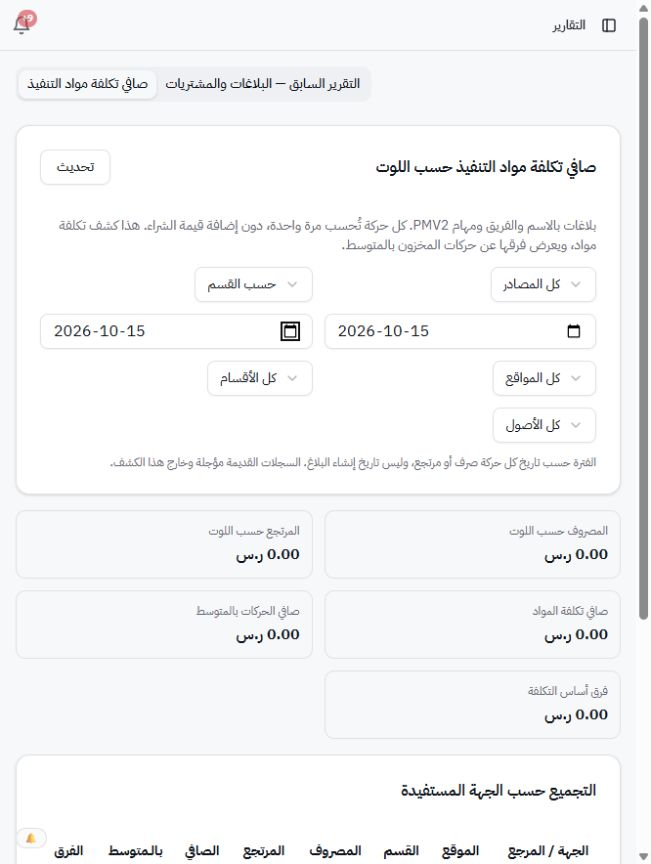
رفض معامل التحويل صفرًا ومعاينة المعامل 5
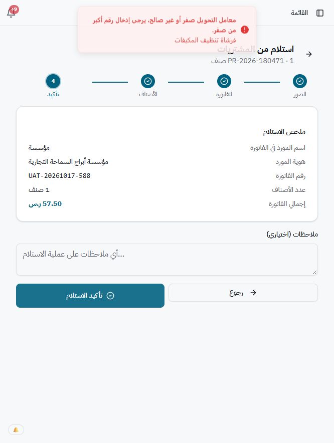
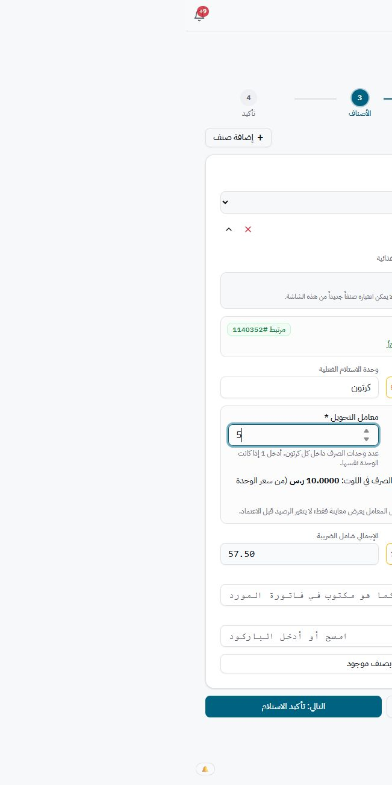
الاستلام والتحويل
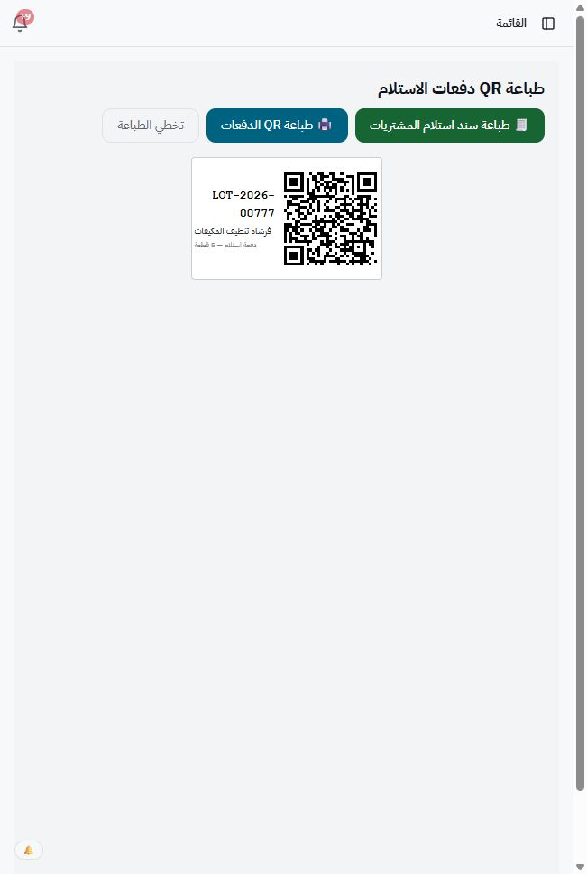
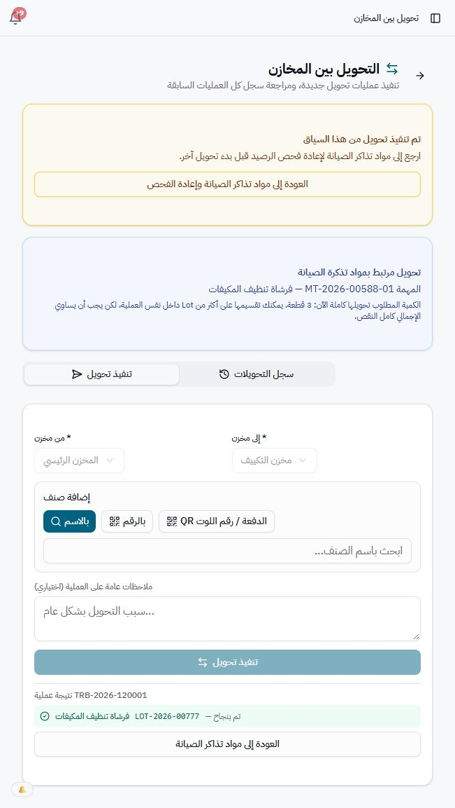
الصرف ومؤقت الزيارة والمرتجع
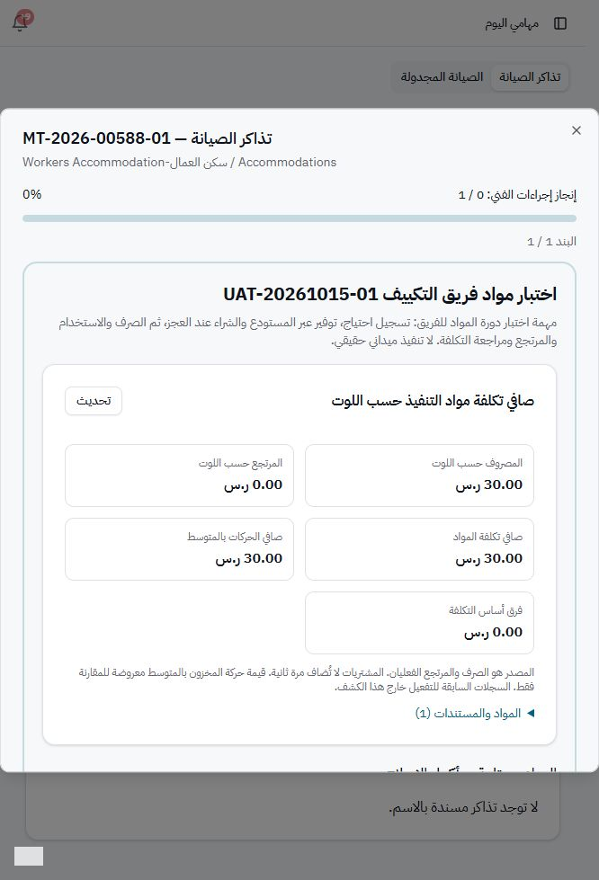
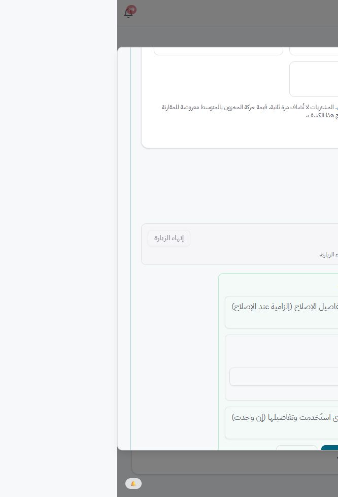
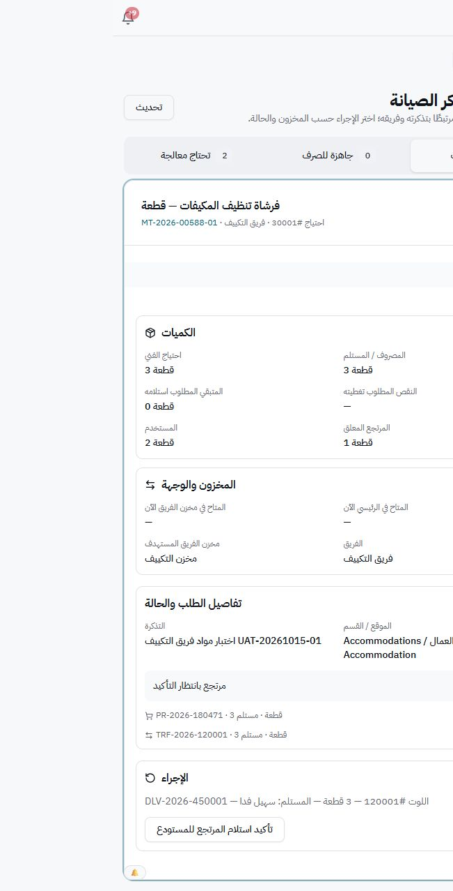
مراجعة المدير والإغلاق والتأكيد
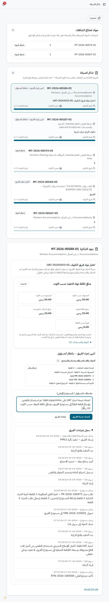
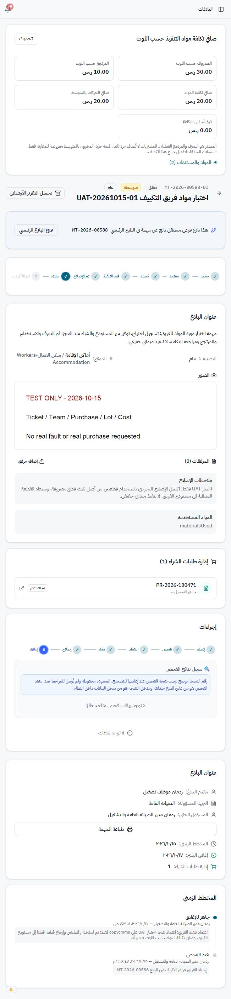
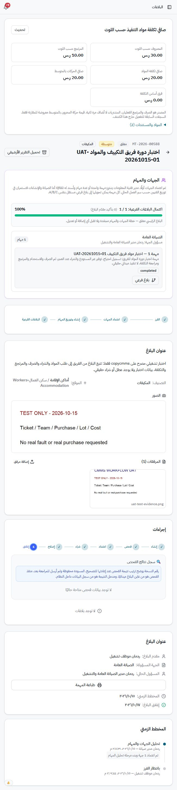
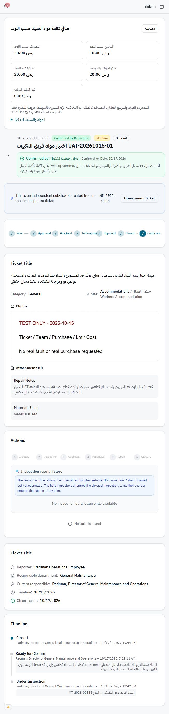
عزل فني الدهان
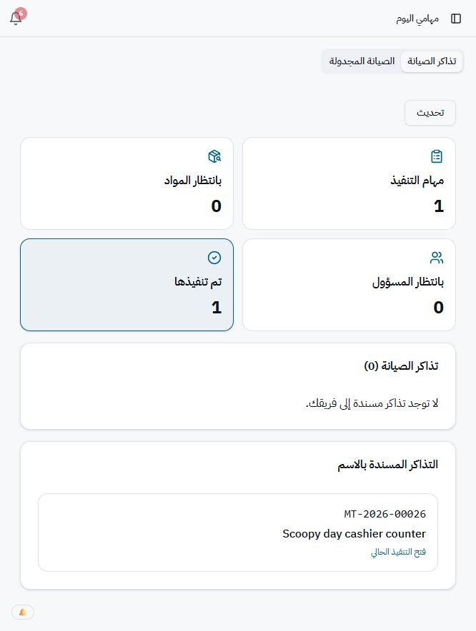
التحقق النهائي من السجلات — JSON · تقرير الجولة الأولى 15 أكتوبر
لم تُجرَ أي اتصالات بقاعدة cmms. بقيت مستندات الاختبار في copycmms لتسهيل المراجعة والتتبع.